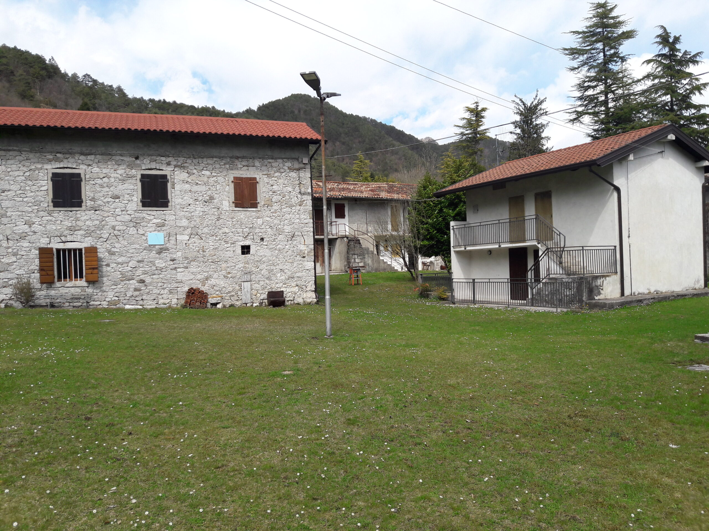

Campo Estivo 2023
Qui sarà esposto l'albo d'oro giorno per giorno del nostro campo estivo.
-
Giorno 1
Siamo la sq. Lupi e oggi (21/08/2023) abbiamo iniziato il campo.
Quella di oggi è la giornata costruzioni dato che abbiamo montato la tenda e abbiamo iniziato a costruire l'angolo.
Abbiamo avuto qualche difficoltà dato che il terreno essendo in pendenza non ci consentiva di avere facilmente tavoli e panche in bolla, in più eravamo senza il nostro vice.
Ma alla fine ce l'abbiamo fatta! -
Giorno 2
Durante questa notte nella tenda dei lupi sono sucessi dei fatti paranormali...
In particolare, oltre al nuovo effetto che si è creato, abbiamo scoperto che il nostro capo squadriglia ha conosciuto qualcuno con cui parlare e cantare, ce lo deve ancora presentare... Comunque cose notturne a parte, oggi, dopo la passeggiata mattutina al rusciello, abbiamo finito la costruzione dell'angolo e, dopo tutte le sventure, è venutto in bolla!
(Ringraziamo il nostro Sirughino, per averci dato una mano non indifferente, ti vogliamo bene) -
Giorno 3
Con oggi possiamo dire che è uffcialmente iniziato il campo, dato che tutta la costruzione degli angoli era finita.
Quella di oggi era la giornata degli Eroditi (Ah si il campo ha come tema Divergent e ogni giornata sarà a tema per ogni fazione).
Appena svegliati le nostre care, CARISSIME pantere (il capo in particolare...), hanno avuto la brillante idea di fare Belinda, noi lupi non approvavamo...
Durante la mattinata abbiamo fatto il primo gioco a tema e subito dopo siamo tornati negli angoli per iniziare ad accendere i fuochi...
Nel pomeriggio siamo andati al torrente, qui abbiamo capito (bene o male tutti) che in un modo o nell'altro anche se non vuoi bagnarti ti bagnerai lo stesso.
Ritornati da torrente, tempo di mettere via le nostre cose, sentiamo un fischio, il fischio del terrore, quello dell'ISPEZIONE...
Noi lupi eravamo bene o male tranquilli dato che la tenda era in ottime condizioni (Grazie Enrico ❤), mentre per l'angolo era appena stato sistemato e quindi non era un problema. -
Giorno 4
Nuovo giorno nuove avventure!
Solita sveglia con "al chiaror del mattin" e successivamente la ginnastica con Laurenzia...
Dopo la ginnastica abbiamo fatto colazione e poi momento di preghiera e alzabandiera.
Finito tutto siamo tornati agli angoli e ci siamo divisi ogniuno con i suoi compiti (Enrico sistema la tenda, Davide Z e Pietro a far legna, Davide T e Nino a lavare le pentole etc... mentre Elia sistemava l'angolo).
Durante la mattinata abbiamo giocato a Baseball e abbiamo affermato (tutto il reparto) che è un gioco molto "Wild".
Nel pomeriggio non abbiamo fatto molto dato che ha piovuto come non mai (tranne durante il campo 2022 durante la notte in cui i capi erano in hike...).
Appena il cielo si era un po' "calmato" i capi ci hanno fatto fare un momento di riflessione, il cosidetto "deserto": per farla breve è un momento per stare da soli a riflettere sulle nostre azioni e poi vi è un momento per stare in squadriglia a riflettere su com'è il clima fra noi etc...
Alla sera abbiamo fatto il fuoco a tema candidi e poi siamo andati a nanna... -
Giorno 5
Quinto Giorno!!
Oggi, come sempre, abbiamo fatto colazione e ginnastica e poi l'alzabandiera, in questo momento ci è stato svelato che il tema della giornata di oggi saranno i Pacifici!
Ma non solo questo ci è stato detto, infatti...
...Oggi c'è stata la Gara Di Cucina 🤯
Quest'anno la gara doveva essere possibile a tutti, di conseguenza i nostri grandi capi celiaci hanno potuto mangiare le pietanze da noi create senza nessuna preocupazione (credo).
Ma non era tutto così semplice, infatti per avere gli ingredienti dovevamo fare dei piccoli giochetti, ma sopratutto c'erano delle mistery box, dove al suo interno c'erano ingredienti che non ci serviavamo, ma che dovevamo obbligatoriamente utilizare.
La squadriglia che vinceva i giochi aveva la possibilità di scegliere gli ingredienti, mentre agli altri veniva data una a caso.
Ahimè avevamo perso e quindi ci siamo cuccati una mistery box a caso... :(
Il menù era particolarmente buono:
Primo: Carbonara (Che avevamo provato tipo 5 volte)
Secondo: Pollo al curry con salsa, poi avevamo preparato il frico, che inizialmente era venuto bene, ma per tenerlo al "caldo", lo abbiamo messo dentro al forno, ma si è bruciato, quindi i capi non lo hanno mangiato 😅
Dolce: Crema al limone: base al biscotto, crema al limone e frutti di bosco con anche 2/3 foglioline di menta.
Finito l'assaggio ai capi è venuto un dubbio: "ma le pentole che fine hanno fatto?", noi le avevamo nascoste dietro ad un albero e non era difficile trovarle, quindi dopo una mezza ristata da parte della squadriglia, i capi sono andati in cerca delle pentole e le hanno trovate...
Dopo tutto questo, c'è stata anche l'ispezione, e come l'altra vola, la tenda era pulita, ma l'angolo non era al top, inoltre abbiamo avuto l'idea grandiosa di appendere su un cordino il coltello che avevamo usato, senza pensare che Davide, che non sta mai fermo, poteva tagliarsi. Quindi ci hanno sequestrato il coltello. La gara l'hanno vinta le manguste, ma siamo stati contenti lo stesso, dato che la carbonara è piaciuta molto :) -
Giorno 6
È arrivato il giorno tanto atteso dal reparto, quello più faticoso
L'USCITA DI REPARTO
Tutto è iniziato bene senza tante complicazioni, poi ci siamo trovati davanti ad un bivio nella quale avevamo 2 percorsi uno più diffcile e uno più semplice.
L'obbiettivo era arrivare al Cuarnan, una chiesetta in alto, scopriremo che nel susseguirsi dell'uscita verrà soprannominata "chiesetta con le ruote"...
La maggior parte dei lupi hanno fatto il percorso hard, poi c'era chi era più o meno veloce: infatti si è creato il gruppo tartarughine: Nino, Mariavittoria, Davide T, Emilia e Rici.
Il reparto andava avanti ma per noi l'arrivo era solo un miraggio, dopo ogni curva facevamo pausetta, ma il problema arrivò quando l'acqua era finita, ma sopratutto c'era il tratto pieno di frane, è stata un'esperienza mistica senza dubbio.
Arrivati al Cuarnan abbiamo fatto merenda e poi siamo tornato verso il campo, qui iniziò la parte difficile, molto diffciele, MOLTO: il percorso era stretto fieno di sassiv = frane, gente che sveniva, gente che non riusciva a venire giù e gente che si è fatta prendere dalla disperazioni più totale.
Arrivati al campo, ci siamo docciati e Davide ha provato l'essenza del mocio di Sirugo.......
Abbiamo cenato insieme e poi abbiamo fatto un minifuoco, dato che eravamno stanchi morti, e inoltre vicino al nostro campo c'era una festa e hanno fatto musica fino alle 4 del mattino, fino a quando la nostra Chiara è andata lì e gli ha detto che "LA NOTTE E' FATTA PER DORMIRE"... -
Giorno 7
Questa mattina i capi sono stati gentili, perchè ci hanno fatto dormire un po' di più. 💖
Oggi è domenica e come di consuetudine siamo andati a messa, quindi siamo saliti nelle macchine e siamo andati a Sant'Elena (forse, non ci ricordiamo bene il nome).
La messa è stata particolare...: i canti erano TUTTI in "furlan" ma non è stata assolutamente pesante dato che sono successi dei fatti divertenti 🤭...
P.S. le vecchiette che erano lì non si aspettavano assolutamente di vederci, quindi erano nostre fan.
Tornati dalla messa il nostro Marco, con Otto ci hanno preparato la merendina e tra un'anguria e l'altra si è fatta ora di pranzo, oggi abbiamo mangiato insieme.
Questo settimo giorno è la giornata degli Intrepidi, e quindi oggi pomeriggio si sono svolte le tanto attese SCOUTIADI e naturalmente noi lupacchiotti abbiamo vinto 😎.
Il fuoco di questa sera è stato animato delle "Maranza Intrepidi" per gli amici Manqueste, noi lupi ci complimentiamo con loro per aver animato un fuoco molto divertente. -
Giorno 8
Ottavo Giorno 🐶 (⮕otto)
Oggi ha piovuto TUTTO il giorno, tranne verso tardo pomeriggio/sera.
Sostanziamente oggi non abbiamo fatto gran chè, abbiamo giocato a scoutball e a roverino, abbiamo messo apposto l'angolo e per il resto del tempo siamo stati insieme con tutto il reparto.
Il fuoco sta sera l'hanno animato i delfini e si è tentuta la tanto attesa SFILATA, ancora non sappiamo chi ha vinto, ma siamo convinti che il gemellaggio tra Pietro e Nino potrebbe portare a grandi voti.
Piccolo Fun Fact, questa sera Davide T e Pietro sono andati a lavarsi i denti e Pietro si è tolto il gemellagggio, ha preso molta paura perchè il nastro aveva lasciato il colore nella sua fronte facendo pensare che fosse sangue, l'ansia è stata tanta... -
Giorno 9
Siamo già al nono giorno, le attività del campo stanno finendo, ma l'uscita di squadriglia non è ancora stata fatta, quindi oggi: USCITA DI SQUADRIGLIA!!
!!!ATTENZIONE!!! IL SEGUENTE TESTO NON RACCONTA LA TRAMA DI UN FILM, MA È SUCCESSO REALMENTE
Inizialmente eravamo abbastanza energici e contenti di partire, ma NON SAPEVAMO COSA CI STAVA ASPETTANDO.
Il nostro caro capo Filippo ci ha dato come destinazione: il Monte Stella...
La Pia e Filippo ci hanno portato alla partenza in macchina e da lì è iniziata la nostra avventura!!
Ancora prima di iniziare stava per piovere, e la priva via che dovevamo prendere si chiamava "Via Crucis"...
Percorsa tutta la via crucis ci siamo trovati in un paesotto con 3 abitanti in corce e abbiamo fatto la prima merenda in una catapecchia, fatta la merenda ci siamo avviati, o meglio avremmo dovuto avviarci, ma non sapeva la strada...
...Abbiamo chiesto indicazioni a un signore che andava in giro per il paese con un sacco di patate, abbiamo scoperto che questo soggetto era colui che aveva piantato i cartelli per dirigersi verso il M. Stella.
Mentre stavamo seguendo la strada abbiamo trovato un'università, inizialmente non stavamo capendo che tipo di "struttura", se così la vogliamo chiamare, fosse, perchè era un ammasso di rottami buttati in mezzo ad un giardino con una casetta in legno mezza catappecchiante con la bandiera della Francia sopra...
Davide Z voleva a tutti i costi trovare un cartello, quindi in mezzo alla strada su un palo buttato là in mezzo abbiamo trovato sto cartello che abbiamo attaccato all'angolo.
Abbiamo continuato il nostro cammino fino al bosco, ah e da ora in poi iniziò a piovere come non mai. Questo bosco era strano, aveva la terra rossastra pieno di nebbia, non si capiva niente.
Seguendo la cartina siamo arrivati in cima al monte Stella, ma per via della pioggia e della nebbia non ce ne eravamo accorti, anche perchè la "cima" del monte non è altro che un bivio e seguendo la strada in disciesa si arrivava giù.
Questo voleva dire che eravamo un botto in anticipo, abbiamo cercato di "mangiare" ma la pioggia era troppa e stendere i ponchi non era la migliore delle idee...
L'unica cosa era sperare di trovare un ennesima catapecchia dove rifugiarsi, cosa che bbiamo fatto.
Lì abbiamo mangiato e abbiamo pure provato ad accendere un fuoco ma c'erano una cosa come 7 motivi per cui non poteva prendere...
Abbiamo ripreso il nostro cammino e tra more e lamponi siamo arrivati alle 16:00 dove siamo arrivati a destinazione.
I capi ci hanno lascito un'attività da fare in squadriglia appena avevamo del tempo libero, quindi appena aveva smesso di piovere (mannaggia al tempo, tutta l'uscita con la pioggia, arriviamo adestinazionme e smette...), abbiamo trovato una tettoia, probabilmente privata e ci siamo messi a fare questa attività.
Arrivati al campo ci siamo docciati e poi abbiamo mangiato. -
Giorno 10
Siamo giunti all'ultimo giorno (completo)
Gioranta tranquilla, possiamo definirla come "giornata smontaggio". Oggi infatti abbiamo iniziato a smontare l'angolo, l'altalena di Davide, l'amaca di Davide, Il porta guidone di Davide, il letto di Davide e il portafazzolettone di Davide, abbiamo lasciato solo le cose più essenziali.
Nel pomeriggio abbiamo giocato a roverino, palla prigioniera, scoutball e cipolla. Ma stavamo solo aspettando L'ULTIMO FUOCO.
Per alcuni è stato l'ultimo fuoco in assoluto, quindi tra giochi, bans e canzoni, sono scappate anche alcune lacrime.
La notte è stata tranquilla, ma sempre con il pensiero costante che è l'ultima notte...
Al mattino ci hanno svegliato con "Al chiaror del Mattin" e abbiamo smontato la tenda, l'angolo, tendone etc...
Abbiamo dato una mano anche alle altre squadriglie con lo smontaggio tenda dato che i problemi non erano pochi (#pant).
Infine abbiamo mangiato ed eravamo pronti per salutare Mario...
Così si è concluso questo campo.
Nel complesso come squadriglia ci siamo trovati molto bene, il clima era felice, a volte c'erano alti e bassi, ma non possiamo sicuramente lamentarci.
2024

Campo Invernale 2024
Qui sarà esposto l'albo d'oro giorno per giorno del nostro campo invernale.
-
Giorno 1
Siamo la sq. Lupi e oggi (02/01/2024) abbiamo iniziato il campo.
Questa mattina ci siamo ritrovati in sede per andare su al campo, quindi ci hanno divisi in macchine e siamo partiti.
Dopo quasi 2 ore di macchina siamo arrivati a destinazione, abbiamo salutato i genitori e siamo partiti per la nostra uscita.
In questa uscita dovevamo fare il giro delle malghe (diciamo che era l'uscita di reparto).
Arrivati a malga Pianezze abbiamo pranzato, essere tornati al campo di due anni fa ci ha fatto un bell'effeto.
Finito il pranzo abbiamo ripreso il nostro cammino e passo dopo passo, malga dopo malga siamo arrivati alla destinazione.
Appena arrivati abbiamo fatto una mega partitona a roverino e subito dopo, la Pia ci ha preparato la merenda e subito dopo aver visto le camere abbiamo fatto un gioco organizzato dai capi squadriglia.
Questo gioco aveva varie fasi con varie prove, ma le vincitrici furono le pantere.
Finito tutto abbiamo cenato e abbiamo fatto il fuoco, che non durò molto perchè eravamo stanchi morti. -
Giorno 2
Oggi è il secondo giorno!
Questa mattina dopo la ginnastica e la colazione siamo partiti per andare a far legna, dato che oggi abbiamo pranzato fuori, ma sopratutto col fuoco.
(Trovare legna asciutta è stata un impresa a dir poco impossibile, quindi la nostra Pia ci ha aiustato con un trucchetto)
Dopo aver pranzato con wurstel, salsicce, polenta, marshmellow e mandarini abbiamo fatto una mega partitona a scoutball.
In questa partita i nostri capi Giorgio e Ale, hanno spiegato e fatto le squadre, sucessivamente si è unito Damiano e ha giocato con noi.
Con l'avanzare del gioco però eravamo sempre più convinti che il nostro Orso Bubu non sapesse bene le regole, allora entro in campo Giorgio, e la cosa non cambiò molto, ANZI PEGGIORO', piccola precisazione tra le regole è vietato contestare l'arbitro altrimenti venivi espulso per un turno, questa regola l'ha inserita Giorgio e fu' l'unico a non rispettarla!!
Finita la partita siamo ritornati al campo e durante la strada la nostra capa Ale ha fatto la combo di fischietto: ha fischiato un falso attenzione con entrabi i fischetti (quello molesto e quello "vero"), la combo era una figata!
Arrivati al campo abbiamo fatto merenda e successivamente la Pia insieme agli altri capi hanno fatto una scenetta nella quale facevano vedere dei ricordi legati a delle emozioni, quindi era un netto collegamento a il film che avremmo visto che non è niente meno di Inside Out!
Questo film serviva per dare il tema al gioco notturno che avremmo fato poco dopo: Erano le 19:30, faceva freddo e avevamo sonno, ma i capi ci hanno portato fuori e ci hanno raccontato del conte dracula e della sua storia, della sua morte... Peccato che dopo di tutto è respawnato e ci stava dando la "caccia", il nostro obbiettivo era sconfiggerlo con l'aglio e la corce che potevamo trovare dai pipistrelli.
Dopo avre costruito la croce, esserci fatti male, aver trovato e subito dopo perso l'aglio, aver perso la vita e aver recuperato l'aglio abbiamo trovato il conte Dracula e lo abbiamo sconfitto, ma potevamo sconfiggerlko definitavamente solo quando avremmo letto una frase in latino con l'aglio in bocca 🤢...
Abbiamo detto sta frase e abbiamo vinto il gioco notturno: Lo scopo di fare questo gioco era provare un po' tutte le emozioni (Felicità: aver sconfitto il conte Dracula, Tristezza: aver perso una vita, Paura: i jumpscare che ti faceva il conte, Discusto: la prova dell'aglio in bocca e Rabbia: aver perso il gioco).
Finalmente potevamo cenare e poi minifuoco e a letto. -
Giorno 3
Ultimo giorno:
Stamattina ci siamo preparati gli zaini, abbiamo sistemato le stanze, perchè il resto del giorno è stato occupato dal deserto fatto sulle emozioni.
Consisteva nel costruire una linea del tempo della nostra vita, dove mettere fatti importanti belli e brutti, mentre nell'attività in squadriglia era costruire una pellicola personale dove colorare ogni riquadro con i colori delle emozioni e poi abbiamo condiviso qualcosa alla squadriglia.
Ora però arriviamo al dunque, quest'anno i capi hanno voluta fare qualcosa di diverso... infatti non ci saranno le imprese di squadriglia, (almeno che qualche squadriglia non le voglia fare), ma ci sarà un impresa di reparto, bastata sulle emozioni e verrà fatto uno spettacolo/corto.
Dopo pranzo abbiamo giocato a bamboo, un gioco prepararto ed idealizzato da Rici con un aiuto da parte degli altri capi sq.
Finito il gioco abbimo fatto merenda e subito dopo sono arrivati i genitori perchè era ora di andare.
Noi lupi, ma anche tutto il reparto, nel complesso siamo stati molto contenti di questo campo, dato che non ci sono stati momenti "morti" o comunque momenti noiosi, anzi l'organizzazione è stata ottima e anche il tema ci è piaciuto molto.

Campo Estivo 2024
Qui sarà esposto l'albo d'oro giorno per giorno del nostro campo estivo.
ATTENZIONE: l'albo d'oro deve ancora essere inserito nel sito, per ora oltre alla pagina non si può visualizzare nient'altro.
-
Giorno 1
Da inserire -
Giorno 2
Da inserire -
Giorno 3
Da inserire -
Giorno 4
Da inserire -
Giorno 5
Da inserire -
Giorno 6
Da inserire -
Giorno 7
Da inserire